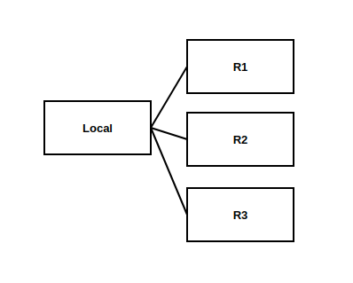

这两天, 我维护的一个项目找我处理 CLOSE-WAIT 过多的问题, 称自从他们的客户将长连接改成短连接, 服务端 CLOSE-WAIT 数量大量增加, 导致服务很慢.
这图显示的是本地主机和一个特定用户 ?:30080 的连接情况, 只能看出?:30008 主动断开连接, 而本地服务迟迟关不了 socket.
另一个场景, 用户使用长连接, 连接数很少.
下图是应用场景, local 需要和不同客户终端通信, 不同客户的代码自己编写, 比如 R1 用长连接, 那么连接数就可以很少. R2 公司把通信方式改成短连接, 连接数就增加. 用短连接的理由是更安全.

怎么实现长短连接? 问了没回复. 我推测, 首先这跟本地服务 socket 是不是 keepalive 无关, 长短连接是客户自己决定的. 也很容易实现：比如 send(msg) 的实现中声明一个 Socket 对象, 离开作用域的时候 close(socket).
已知 R 端被动接受连接, 那么所谓长短连接就是它通过主动断开来控制, 收到一条消息就断开一次连接. R 端主动断开了连接之后, L 端 socket 马上进入 CLOSE_WAIT 状态, 直到 L 端把它关闭. 如果这时候 L 端调用 recv(), 返回值就是 0.
接下来发现他们代码的一个 BUG: 在 recv() 返回状态是 0 的时候, 关掉 sockfd, 然后再次 connect(sockfd). 这么做的结果就是 connect() 失败, errno 为 EBAF. 看 man connect:
正确做法是关掉 socket 之后, 重新创建 socket, 再 connect().
但这样也解释不了 close() 之后为什么还处于 CLOSE_WAIT 状态. 只剩下一个可能性: L 端没有机会关掉 socket.
关于 CLOSE_WAIT 导致性能下降的问题, CLOSE_WAIT 会消耗文件描述符, L 端没有文件描述符之后, 再向 R 端发请求, 由于没有文件描述符可用, 所以创建不了 socket, 导致表面上看性能下降了. 我检查了机器, 远远没到耗尽文件描述符的程度, 排除了这种可能.
CLOSE_WAIT 过多的根本原因就是不关 socket.